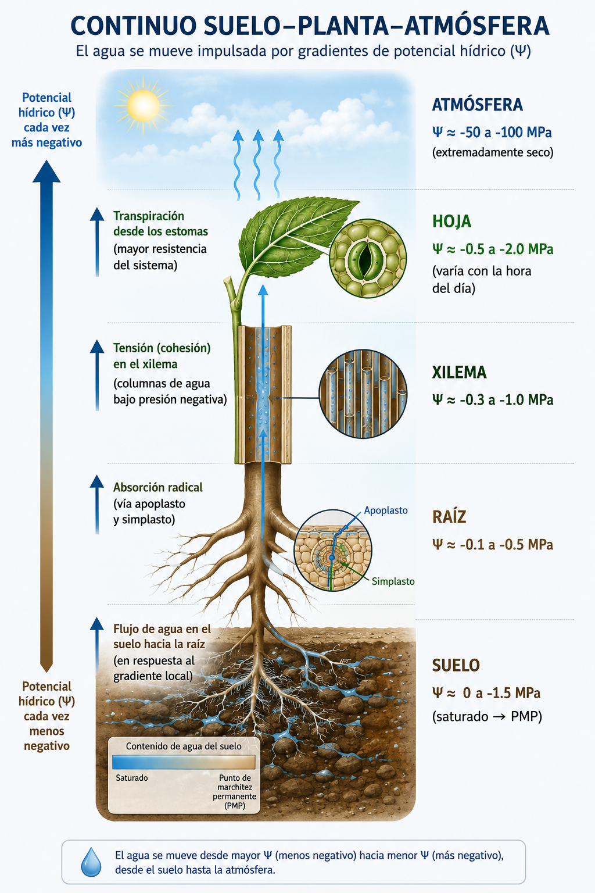
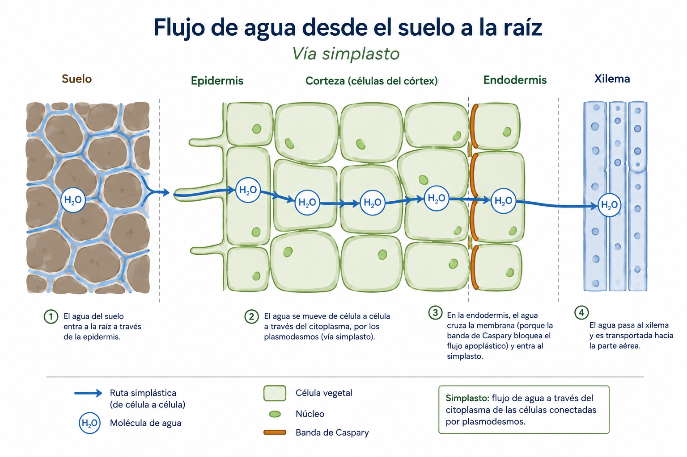
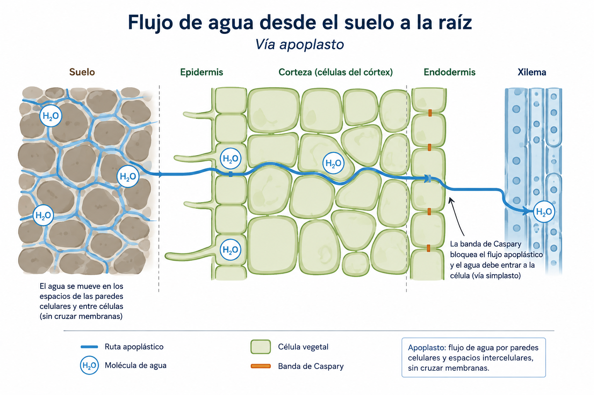
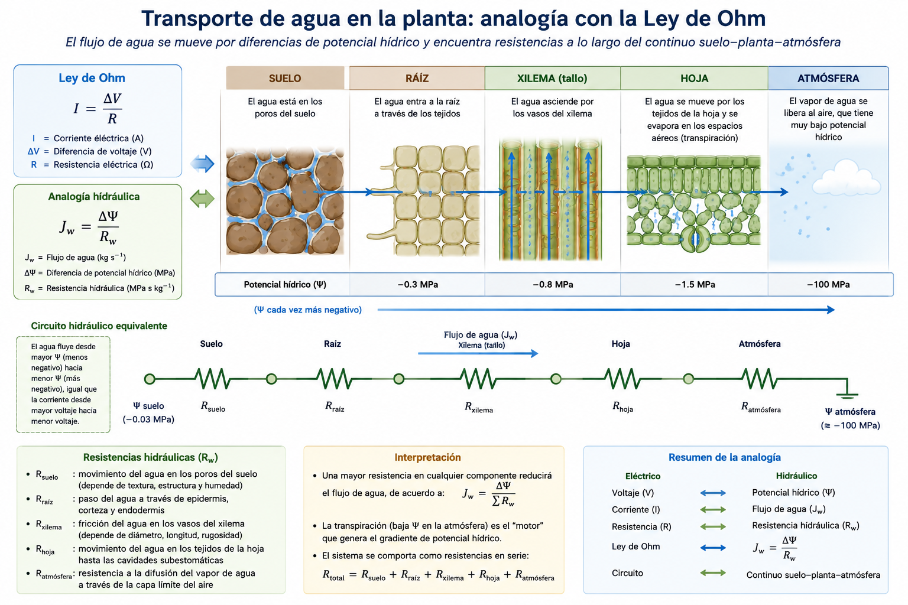
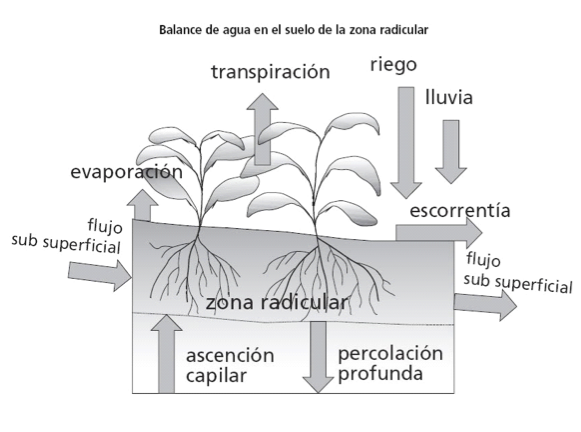
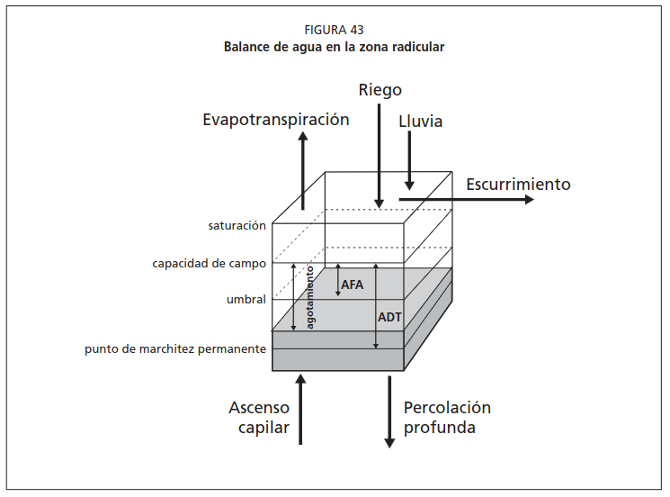

Sesión 1.2: El continuo suelo-planta-atmósfera e introducción al riego
Sesión 1.1 — Ideas fuerza:
1. El agua es una molécula polar con propiedades excepcionales
2. El ciclo hidrológico define la disponibilidad de agua en cada zona
3. En Chile, la agricultura consume >80% del agua — principalmente en la zona central
4. La huella hídrica mide cuánta agua “cuesta” producir cada cultivo
5. Chile exporta ~11,000 millones de m³ de agua virtual al año
Hoy: ¿Cómo se mueve el agua dentro del sistema? → El SPAC
| Unidad | 1 — El agua en la producción agrícola |
| Sesión | 1.2 |
| RAA | RAA1 |
| Duración | ~90 minutos |
| Contenido | Continuo suelo-planta-atmósfera, gradientes de potencial, introducción al riego |
Al finalizar esta sesión, serás capaz de:
Soil — Plant — Atmosphere Continuum

Principio fundamental del SPAC
El agua SIEMPRE se mueve de mayor a menor potencial hídrico.
El gradiente de Ψ en el SPAC:
\[ \begin{aligned} &\text{Suelo (-0.03 MPa)} \rightarrow \text{Raíz (-0.3 MPa)} \rightarrow \text{Xilema (-0.8 MPa)} \\ &\rightarrow \text{Hoja (-1.5 MPa)} \rightarrow \text{Atmósfera (-100 MPa)} \end{aligned} \]
La caída total es de ~3,000 veces desde el suelo hasta la atmósfera.
Analogía: El SPAC es como una manguera que conecta un estanque (suelo) con una aspiradora gigante (atmósfera). La planta regula la llave de paso (estomas).


Ordena los compartimentos del SPAC según el potencial hídrico, del MENOS negativo al MÁS negativo:
Suelo · Hoja · Raíz · Xilema · Atmósfera
Resuelve en 2 minutos. ¿En qué dirección se mueve el agua?
Definición: Energía libre del agua por unidad de volumen en un punto del sistema, comparada con agua pura a presión atmosférica y misma temperatura (referencia = 0).
\[\Psi_{total} = \Psi_m + \Psi_o + \Psi_g + \Psi_p\]
Unidades:
| Unidad | Equivalencia |
|---|---|
| 1 MPa | = 10 bares |
| 1 MPa | ≈ 9.87 atmósferas |
| 1 MPa | = 1,000 kPa |
| 1 bar | = 100 kPa |
En suelo usamos kPa; en fisiología vegetal, MPa.
Definición: Energía debida a la interacción del agua con la matriz sólida (suelo o paredes celulares).
| Ψm (kPa) | Estado del suelo |
|---|---|
| 0 | Saturado |
| -33 | Capacidad de campo |
| -500 | Seco |
| -1500 | Punto de marchitez permanente |
Definición: Energía debida a la presencia de solutos disueltos.
| Condición | Ψo típico (MPa) |
|---|---|
| Agua de riego de buena calidad | -0.05 a -0.1 |
| Suelo salino | -0.3 a -0.8 |
| Agua de mar | ≈ -2.5 |
| Célula vegetal típica | -0.5 a -1.5 |
Potencial gravitacional (Ψg):
- Energía debida a la altura de la columna de agua
- \(\Psi_g = \rho \cdot g \cdot h\) (positivo hacia arriba desde la referencia)
- 1 m de altura ≈ 0.01 MPa
- Relevante en árboles (>10 m de altura)
Potencial de presión (Ψp):
- Energía debida a presión hidrostática
- Positivo dentro de células vegetales (turgencia)
- Cero o negativo en el xilema bajo tensión
- En células turgentes: Ψp ≈ 0.3-1.0 MPa
- Ψp = 0 en el suelo (excepto saturado con carga hidráulica)
| Compartimento | Componente dominante | ¿Por qué? |
|---|---|---|
| Suelo no saturado | Ψm (mátrico) | Capilaridad y adsorción |
| Suelo salino | Ψm + Ψo | Sales + matriz |
| Raíz | Ψo + Ψp | Solutos celulares + turgencia |
| Xilema | Ψp (negativo = tensión) | Columna de agua bajo succión |
| Hoja (mesófilo) | Ψo + Ψp | Solutos del metabolismo + pared celular |
| Atmósfera | Ψo (vapor de agua) | Humedad relativa determina el potencial |
Para cada compartimento, indica el componente del potencial hídrico que domina:
Resuelve en 3 minutos.
El potencial hídrico del vapor de agua en la atmósfera depende de la humedad relativa:
\[\Psi_{atm} = \frac{RT}{V_w} \cdot \ln\left(\frac{HR}{100}\right)\]
Donde:
- R = 8.314 J/mol·K (constante de los gases)
- T = temperatura en Kelvin
- \(V_w\) = volumen molar del agua (1.8 × 10⁻⁵ m³/mol)
- HR = humedad relativa (%)
Ejemplo: T = 25°C (298 K), HR = 50%
. . .
\[\Psi_{atm} = \frac{8.314 \times 298}{1.8 \times 10^{-5}} \cdot \ln(0.50) = 137.6 \times (-0.693) = -95.4 \text{ MPa}\]
| Compartimento | Ψm | Ψo | Ψg | Ψp | Ψ total (MPa) |
|---|---|---|---|---|---|
| Suelo saturado | 0 | -0.01 | 0 | 0 | ≈ -0.01 |
| Suelo a CC | -0.033 | -0.01 | 0 | 0 | ≈ -0.04 |
| Suelo a PMP | -1.5 | -0.02 | 0 | 0 | ≈ -1.5 |
| Raíz (cortex) | -0.1 | -0.4 | 0 | +0.3 | ≈ -0.2 |
| Xilema (tallo) | ≈ 0 | -0.1 | +0.1 | -0.5 | ≈ -0.5 |
| Hoja (mesófilo) | -0.2 | -1.0 | +0.05 | +0.2 | ≈ -1.0 |
| Atmósfera (HR=50%) | — | -95 | — | — | ≈ -95 |
Calcule la diferencia de Ψ entre compartimentos adyacentes:
| Tramo | ΔΨ (MPa) | Resistencia |
|---|---|---|
| Suelo → Raíz | ? | Media (interfaz suelo-raíz) |
| Raíz → Xilema | ? | Alta (banda de Caspary) |
| Xilema → Hoja | ? | Baja (conductos abiertos) |
| Hoja → Atmósfera | ? | Muy alta (estomas) |
La interfaz hoja-atmósfera concentra ~98% de la caída total de potencial. Los estomas son la llave que regula todo el sistema.
Analogía con la ley de Ohm:
\[Flujo = \frac{\Delta\Psi}{R_{total}}\]
\[R_{total} = R_{suelo} + R_{raiz} + R_{xilema} + R_{hoja} + R_{estomatica} + R_{capa\ limite}\]
| Resistencia | Magnitud relativa | Controlable por… |
|---|---|---|
| Restomática | Dominante | Planta (cierre/apertura estomática) |
| Rcapa límite | Alta (sin viento) | Velocidad de viento |
| Rxilema | Baja-media | Anatomía de la planta |
| Rsuelo-raíz | Media | Contenido de agua del suelo |

Resuelve en 3 minutos.
1. Déficit hídrico estructural
- Chile central: P ≈ 340 mm/año, ETo ≈ 1,350 mm/año
- Déficit ≈ 1,010 mm/año → sin riego no hay cultivo posible
2. Oportunidad productiva
- Cultivos de alto valor (frutales, hortalizas) en zonas áridas/semiáridas
- Chile es potencia frutícola del hemisferio sur GRACIAS al riego
3. Estabilización de la producción
- La variabilidad interanual de lluvias en Chile es alta (CV > 30%)
- El riego desacopla la producción de la incertidumbre climática
Tres fuentes de información para decidir:
| Fuente | Indicador | Unidad del curso |
|---|---|---|
| Suelo | θv actual vs. umbral de riego | Unidad 2 |
| Planta | Ψ foliar al mediodía, conductancia estomática (gs) | Unidad 3 |
| Atmósfera | ETo acumulada desde el último riego | Unidad 4 |
La mejor decisión integra las tres fuentes
| Método | ¿Qué mide? | Ventaja | Desventaja |
|---|---|---|---|
| Balance hídrico | Entradas - salidas de agua | Simple, sin equipo | Requiere datos de ET |
| Tensiómetro | Ψm del suelo | Directo, barato | Mantenimiento, rango limitado |
| Sensores FDR/TDR | θv del suelo | Continuo, automatizable | Costo inicial |
| Cámara de presión | Ψ foliar | Mide la planta directamente | Laborioso, destructivo |
| Observación visual | Marchitez, color | Sin costo | Tarde — el estrés ya ocurrió |
Regla de oro: NUNCA esperar a ver la planta marchita para regar.
Lámina neta (\(L_n\)): cantidad de agua que se debe reponer en la zona radical (mm).
\[L_n = (\theta_{CC} - \theta_{actual}) \times Z_r\]
Lámina bruta (\(L_b\)): cantidad de agua a aplicar considerando pérdidas en el sistema.
\[L_b = \frac{L_n}{E_a}\]
Donde \(E_a\) = eficiencia de aplicación del sistema de riego.
| Sistema de riego | Ea típica | ¿Qué se pierde? |
|---|---|---|
| Tendido / Inundación | 0.30 - 0.45 | Percolación profunda, escorrentía |
| Surco | 0.40 - 0.65 | Percolación al final del surco |
| Aspersión portátil | 0.60 - 0.75 | Evaporación, arrastre por viento |
| Pivote central | 0.75 - 0.90 | Evaporación (gotas finas) |
| Goteo superficial | 0.85 - 0.95 | Evaporación localizada (mínima) |
| Goteo subsuperficial | 0.90 - 0.95 | Mínimas |
Datos:
- Suelo franco: CC = 0.30 cm³/cm³, θ actual = 0.18 cm³/cm³
- Profundidad radical (maíz): Zr = 0.8 m = 800 mm
- Sistema de riego por goteo: Ea = 0.90
Cálculo: \[L_n = (0.30 - 0.18) \times 800 = 0.12 \times 800 = 96 \text{ mm}\]
\[L_b = \frac{96}{0.90} = 106.7 \text{ mm}\]
Hay que aplicar 107 mm de riego para reponer 96 mm en la zona radical.
Balance diario del suelo:
\[\Delta S = P + R - ET_c - D - Q\]
| Entradas (+) | Salidas (-) |
|---|---|
| Precipitación efectiva (P) | Evapotranspiración del cultivo (ETc) |
| Riego aplicado (R) | Drenaje profundo (D) |
| Ascenso capilar (freático) | Escorrentía superficial (Q) |
Objetivo del manejo de riego: Mantener ΔS ≈ 0 en el rango AFA < θ < CC.


| Tipo | % de la superficie regada | Tendencia |
|---|---|---|
| Gravitacional (surco, tendido) | ~60% | Decreciente |
| Aspersión (cañón, pivote) | ~15% | Estable |
| Goteo y microaspersión | ~25% | Creciente |
La tendencia es clara: mayor tecnificación. Cada % de cambio de riego gravitacional a goteo ahorra millones de m³.
| Unidad | Pregunta | Concepto clave | Herramienta |
|---|---|---|---|
| U1 ← Hoy | ¿Por qué importa? | SPAC, huella hídrica | Contexto |
| U2 | ¿Cuánta agua en el suelo? | CC, PMP, ADT, AFA | Sensores, cálculos |
| U3 | ¿Cómo usa el agua la planta? | Ψ, transpiración, gs | Porómetro, cámara presión |
| U4 | ¿Cuánta agua demanda? | ETo, ETc, Kc | Penman-Monteith |
| U5 | ¿Cuándo/cuánto regar? | Frecuencia, balance | Programación |
| U6 | ¿Con qué tecnología? | Sensores, telemetría | Plataformas digitales |
Problema: Un agricultor cultiva tomates con riego por goteo (Ea=0.90) en suelo franco (CC=0.32, θ actual=0.20, Zr=0.6 m). La ETo de la semana pasada fue 42 mm y el Kc del tomate en esta etapa es 0.85.
Calcule: 1. Lámina neta necesaria para llevar el suelo a CC 2. Lámina bruta a aplicar 3. ETc de la semana (mm) 4. ¿Cada cuántos días debería regar aproximadamente?
Resuelve en 8 minutos. Comparte tu resultado.
El SPAC describe el camino del agua: Suelo → Raíz → Xilema → Hoja → Atmósfera
El potencial hídrico (Ψ) mide la energía libre del agua; se mueve de Ψ mayor a menor
Ψ total = Ψm (mátrico) + Ψo (osmótico) + Ψg (gravitacional) + Ψp (presión)
El gradiente suelo (−0.03 MPa) → atmósfera (−100 MPa) es de ~3,000× — los estomas son el punto de control
Regar es necesario cuando P < ETc; la decisión de cuándo/cuánto integra suelo + planta + atmósfera
Lámina neta = (CC − θ) × Zr; Lámina bruta = Ln / Ea
Unidad 2 — El agua en el suelo
Sesión 2.1: Propiedades físicas e hidráulicas del suelo que afectan la retención de agua
→ ¿Qué propiedades del suelo determinan cuánta agua puede almacenar? → ¿Qué es la curva de retención y por qué es la “huella digital” del suelo?
Taller 1 (Google Colab): taller-01.ipynb — Huella hídrica + propiedades físicas del suelo
Dibuje el continuo suelo-planta-atmósfera indicando los valores típicos de potencial hídrico en cada compartimento.
¿En qué compartimento del SPAC ocurre la mayor caída de potencial? ¿Qué estructura regula esta resistencia?
Calcule Ψ de la atmósfera para T = 30°C (303 K) y HR = 30%. (R/Vw = 0.462 MPa/K)
Un agricultor en la zona central cultiva maíz con riego por surco (Ea=0.55). ¿Por qué necesita regar si llueve 400 mm al año?
¿Cuál es la diferencia entre lámina neta (\(L_n\)) y lámina bruta (\(L_b\))? ¿Cuál usa para programar y cuál para operar?
¿Qué componente del potencial hídrico domina en el suelo? ¿Y en las células de la hoja? ¿Por qué?
Un suelo franco a CC tiene Ψm = −33 kPa. Convierta a MPa y a bares.
TAG2027 — Relación Suelo Agua Planta | UDLA